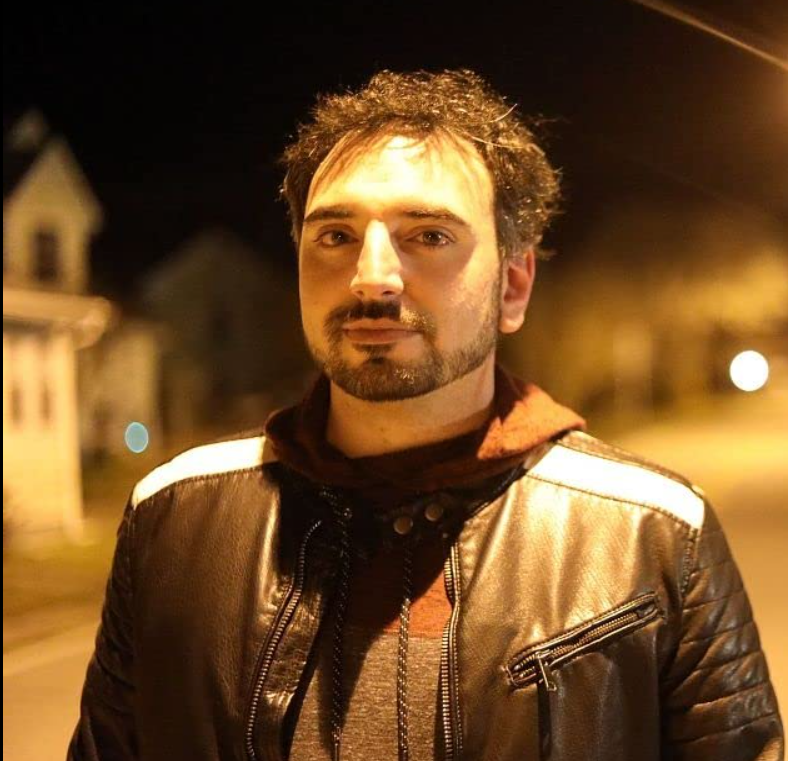
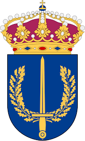
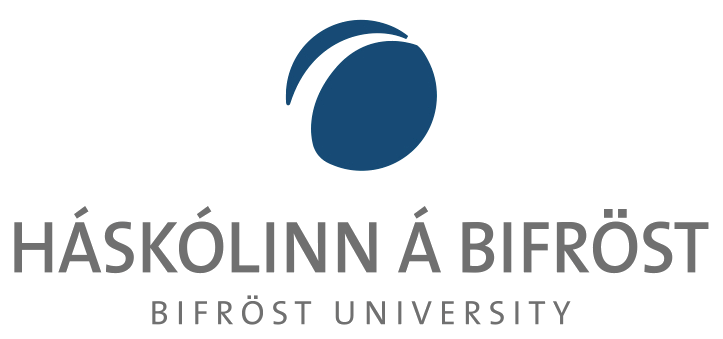
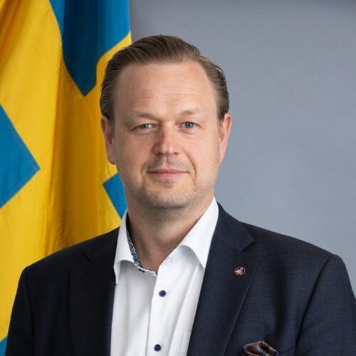
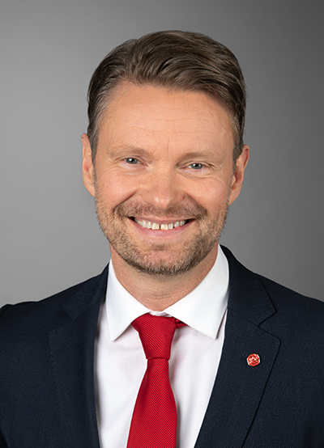

NATO COUNTRY DIRECTOR
Dr. Gregory Falco, Cornell University, USA
gfalco@cornell.edu
Dr. Gregory Falco is an Assistant Professor at the Sibley School of Mechanical and Aerospace Engineering and the Systems Engineering Program at Cornell University. He received his PhD from MIT, where NASA’s Jet Propulsion Laboratory funded his doctoral research in Cybersecurity at MIT’s Computer Science and Artificial Intelligence Laboratory (CSAIL). Prior to joining Cornell University, he was an Assistant Professor at Johns Hopkins University’s Institute for Assured Autonomy and completed postdoctoral research at Stanford University’s Freeman Spogli Institute and MIT CSAIL.He is the director of the Aerospace ADVERSARY Laboratory, which designs and develops next-generation autonomous, secure and resilient space infrastructure. As a hacker, he exploits physics and modern computing systems to achieve missions previously thought to be infeasible. His space technology research is policy-relevant and advances standards and national security conversations relating to space supremacy and cybersecurity. DARPA, the US Space Force, AFRL, NIST and NASA have funded his lab.

NATO PARTNER COUNTRY DIRECTOR
Hans Liwang, Swedish Defence University, Sweden
Hans.Liwang@fhs.se
Hans Liwang is a docent in Military-Technology at the Swedish Defence University and holds a Ph.D. in Shipping and Marine Technology from Chalmers University of Technology . He also holds a M.Sc. degree in Naval Architecture from the Royal Institute of Technology. Dr. Liwang has more than twenty years of experience as an engineer and lecturer at the Swedish Defence University, the Royal Institute of Technology, Chalmers University of Technology and the Defence Materiel Administration.

Bjarni Már Magnússon, Bifrost University, Iceland
deildarforsetiLD@bifrost.is
Bjarni Már Magnússon is an Icelandic Professor of Law and dProfessor Bjarni Már Magnússon serves as the Dean of the Faculty of Law at Bifröst University, Iceland. He earned his Ph.D. from the University of Edinburgh, Scotland, where he specialized in international legal issues pertaining to the continental shelf beyond 200 nautical miles. During his doctoral studies, he contributed to prominent cases before international courts and tribunals on this subject.Before his tenure at Bifröst University, Professor Magnússon worked at Reykjavik University for a decade. He was recently appointed to sit on the Icelandic Climate Council and participates in the Icelandic government's working group responsible for preparing submissions to the Commission on the Limits of the Continental Shelf.His research interests include the international law of the sea, space law, security and defense, and Icelandic foreign relations law. Professor Magnússon is an alumnus of both the Chevening Scholarship and the Fulbright Arctic Initiative. Recently he and his colleagues from the Faculty of Social Sciences at Bifröst University introduced Iceland's first undergraduate program in Security Studies and Civil Defense which starts running next fall.ean of the faculty of law at Bifröst University. He specialises in international law, mainly the international law of the sea. He sits on the Icelandic Climate Council.

Myriam Dunn Cavelty, ETH Zurich, Switzerland
dunn@sipo.gess.ethz.ch
Myriam Dunn Cavelty is Senior Scientist and Deputy Head of Research and Teaching at the Center for Security Studies (CSS), ETH Zurich. She is the author of Cyber-Security and Threat Politics: US Efforts to Secure the Information Age (Routledge 2008) and many other articles and books on the politics of cyber-security.
Alex Marder, Johns Hopkins University, USA
amarder@jhu.edu
Alex Marder is an assistant professor of computer science and a member of the Institute for Assured Autonomy.Marder’s research covers a wide breadth of networking areas, including the use of empirical analyses and machine learning to evaluate and improve the security and performance of wired and wireless networks. His current work leverages a deep understanding of network architecture and deployment to design secure 5G communication networks for the Department of Defense, reveal security weaknesses in domestic internet access networks, and provide a better understanding of broadband inequity.
Johan Sigholm
Swedish Armed Forces, Headquarters, Head of Section, Data-Driven Analysis
Nicolo Boschetti
Cornell University, Aerospace Adversary Laboratory, PhD Candidate
Lieutenant Thomas Frisk
Swedish Defense University, Assistant Professor of Practice
Vera van Zoest
Swedish Defence University, Assistant Professor

Lieutenant Commander Jonas Kindgren
Blekinge Institute of Technology, PhD Candidate
Henric Johnson
Blekinge Institute of Technology, President
Sarah Sophia Wiedemar
ETH Zurich, Researcher

Emil Larson
Swedish Defense University, PhD Candidate

Dr. Magnús Árni Skjöld Magnússon
Bifröst University, Associate Professor